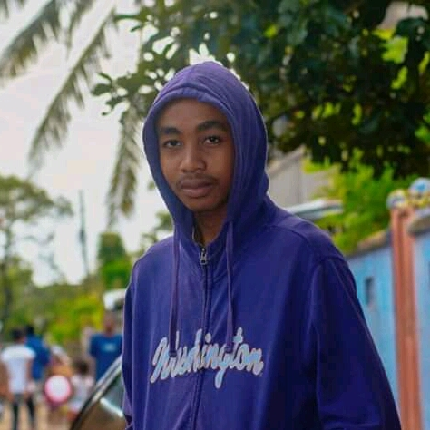
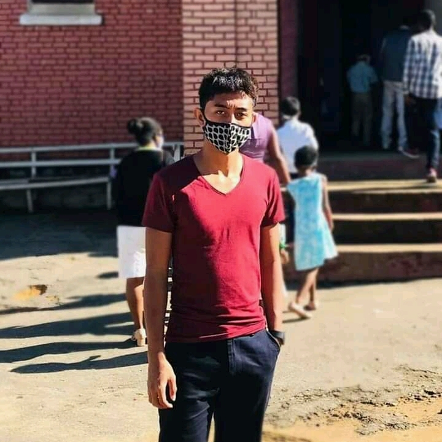
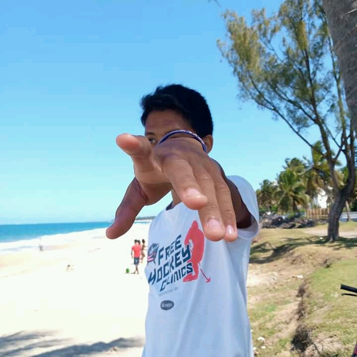

Les developpeurs

TSANGASOA Falinirina Adriano
N°135
N°135

ANDRITOAVINA Aro Iorenantsoa Mykaia
N°22
N°22

RAMAMONJISOA Antonio Hery
N°82
N°82
ANDRIANANDROSON Najoronirainy Erico
N°13
N°13
RAZAKAMANANTSOA Dimbiniaina Jordany
N°123
N°123